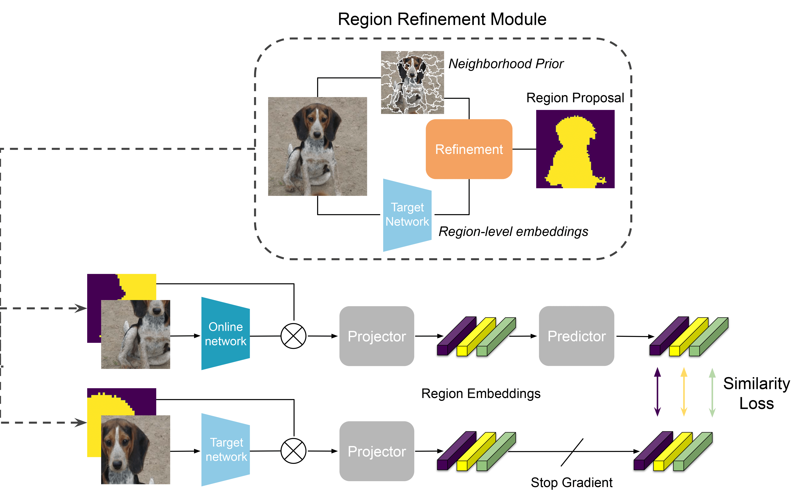
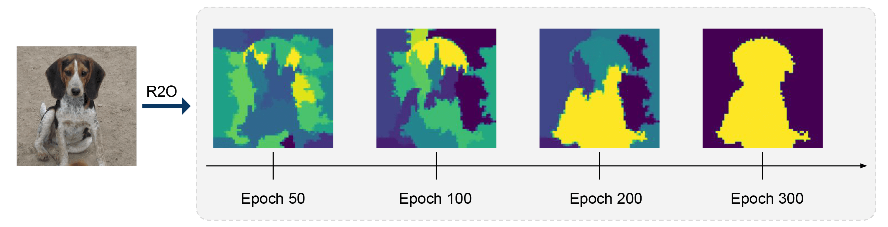
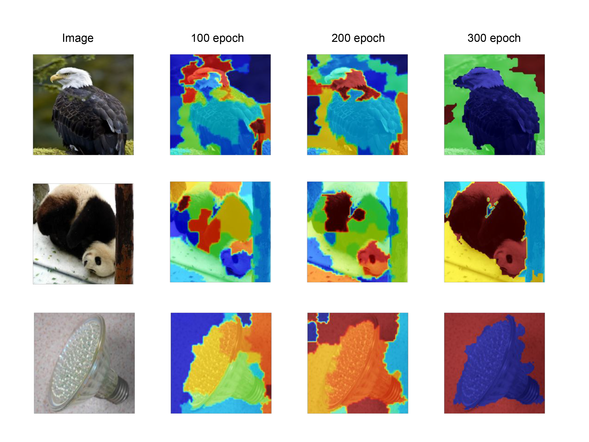

Refine and Represent: Region-to-Object Representation Learning
* Equal Contribution
1Berkeley AI Research 2Panasonic
|

Recent works in self-supervised learning have demonstrated strong performance
on scene-level dense prediction tasks with either object-centric or region-based
correspondence objectives. In this paper, we present Region-to-Object Representation Learning (R2O) which unifies region-based and object-centric pretraining.
R2O operates by training an encoder to dynamically refine region-based segments
into object-centric masks and then jointly learns representations of the contents
within the mask. R2O uses a region refinement module to group small image regions, generated using a region-level prior, into larger regions that are semantically
similar to objects by clustering region-level features. As pretraining progresses,
R2O follows a region-to-object curriculum which encourages learning region-level
features early on and gradually progresses to train object-centric representations.
Representations learned using R2O lead to state-of-the art performance in semantic
segmentation for PASCAL VOC (+0.7 mIOU) and Cityscapes (+0.4 mIOU) and
instance segmentation on MS COCO (+0.3 APmk). Further, after pretraining on
ImageNet, our encoders surpass existing state-of-the-art in unsupervised
object segmentation on the Caltech-UCSD Birds 200-2011 dataset (+2.9 mIoU)
without any further training.
Region to Object Mask Refinement
Our goal is to find semantically meaningful segmentations of images while jointly learning good representations for underlying semantics. We formulate this goal as a bilevel optimization problem. Our approach is to
iteratively perform a mask-refinement step that refines region-level priors into object-centric masks and a representation learning step that optimizes representational invariance for mask-level features. Throughout the process, the number of segments is gradually reduced and the models's receptive field evolves from small neighborhoods to object-centric masks.

We visualize the masks generated by R2O in the mask refinement step during the pretraining on ImageNet-1K after 100, 200
and 300 epochs. We demonstrate early masks consist of random image segments which gradually
become object-centric. This qualitative analysis affirms our assumption.

Related Works
| If you found our work interesting, please also consider looking into some closely related works like Detcon and Odin.
|